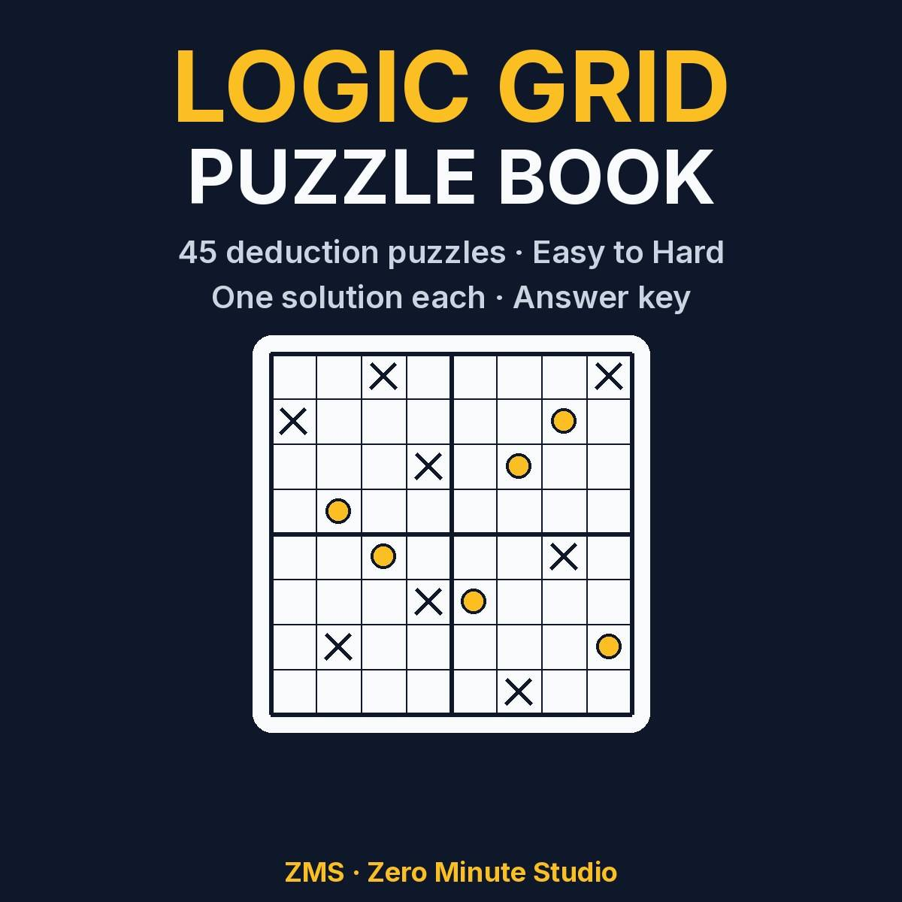
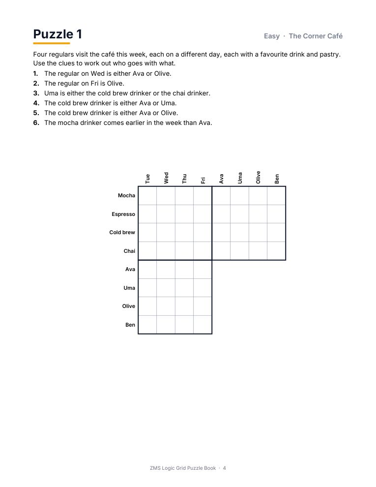
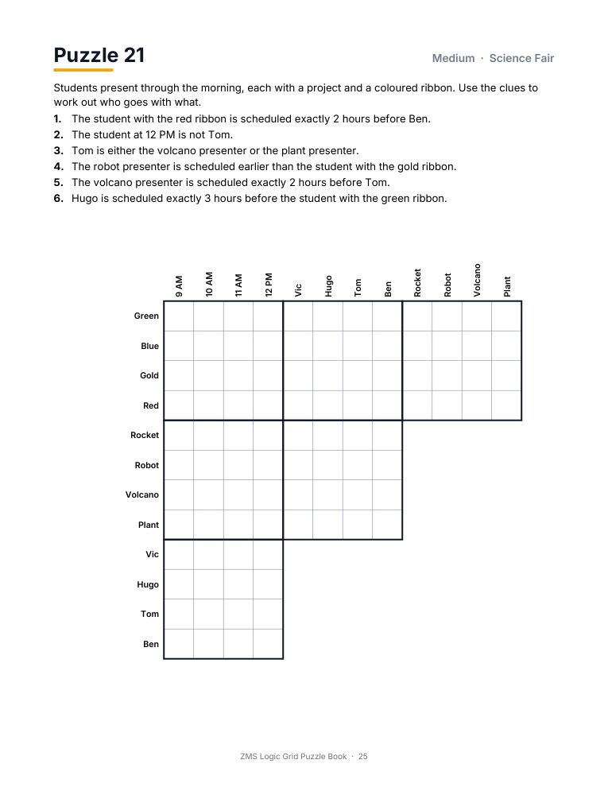

Logic Grid Puzzle Book: 45 Printable Deduction Puzzles

Classic "who owns what" deduction puzzles to print and solve. Read the clues, fill the grid, and work out who has which pet, drink or project. Every puzzle has exactly one solution, so it is pure logic with no guessing.
- 45 puzzles in three levels: Easy (15), Medium (15), Hard (15)
- 15 different themes: cafés, gardens, flights, recitals and more
- A how-to guide with a worked example for first-timers
- Full answer key, plus two blank grids to print
- Instant PDF download, prints on US Letter or A4
Preview


FAQ
How do I get it? Instantly after payment, as a PDF.
Is there one solution per puzzle? Yes, each was verified by computer.
Are answers included? Yes, for all 45 puzzles.
We don't do refund & return ✌️